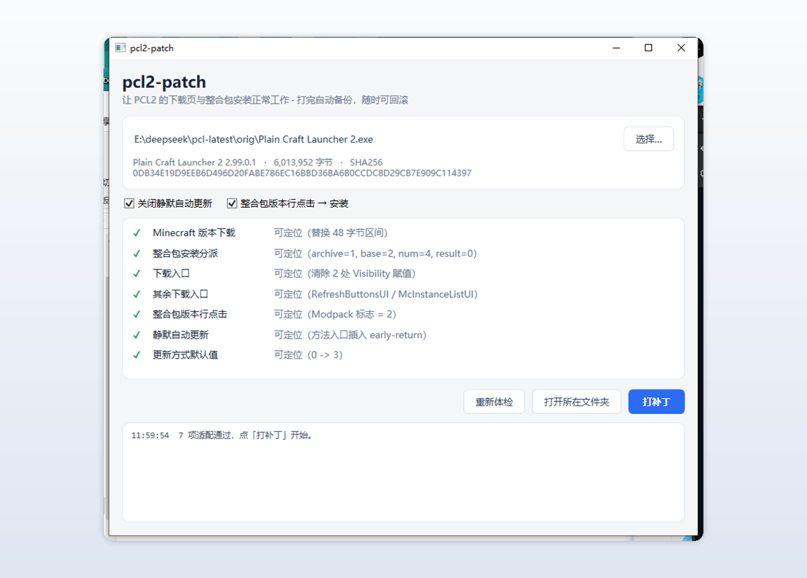
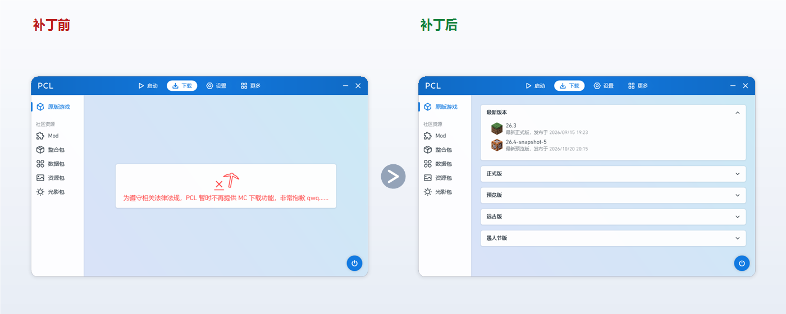

PCL2 下载修复补丁
让 Plain Craft Launcher 2 的下载页与整合包安装重新工作

让 Plain Craft Launcher 2 的下载页与整合包安装重新工作

PCL2 2.99 起把 Minecraft 下载功能收掉了；打完补丁，下载页恢复原样。

| PCL 版本 | 状态 | 补丁项 | 说明 |
|---|---|---|---|
2.99.0.1 | ✅ 已适配 | 7 | 含「原版游戏」入口与启动页下载按钮的还原 |
2.99.0.0 | ✅ 已适配 | 5 | 另 2 项该版本没有对应改动，自动跳过 |
| 其它版本 | ⚠️ 未适配 | — | 工具会逐项显示能否定位，未适配项标红并写明原因 |
下载一个单文件 exe，双击打开。
| 文件 | 大小 | 适用 |
|---|---|---|
pcl2-patch-gui.exe | 约 320 KB | 推荐。用 Windows 自带的 .NET Framework 4.8 |
pcl2-patch-gui-net9.exe | 约 58 MB | 系统精简、4.8 缺失或损坏时用，自带 .NET 9 运行时 |
Plain Craft Launcher 2.exe 拖进窗口；回滚：同目录下会生成 Plain Craft Launcher 2.exe.bak，覆盖回去即可。
补丁项按 PCL 版本挂载，新版本新增的隐藏逻辑单独处理，而不是一套补丁硬套所有版本。
只还原 PCL 原本的行为，不往目标程序里加弹窗、注册表项或后台逻辑。
先探测后写入，写完回读再验一遍；定位失败一律中止，绝不强写。
不会。工具在副本上操作，写入前后各探测一次，全部通过才落盘。
默认的 pcl2-patch-gui.exe 不用，它跑在 Windows 自带的 .NET Framework 4.8 上（Win10 1809+ / Win11 预装）。
更新会覆盖文件，补丁随之失效。重跑一次本工具即可。
不要点 PCL 的「检查更新」，会覆盖成官方版；更新后重跑一次即可。
2.99.0.1 起作者把入口也隐藏了，补丁会一并还原。详细原因与逐步骤说明见 PCL2 下载不了 Minecraft 怎么办。
整合包安装链路同样被关闭了，补丁会恢复分派逻辑。详见 PCL2 整合包安装失败怎么办。